import torch
import matplotlib.pyplot as plt
import pandas as pd06wk: 신경망: 로지스틱의 한계 및 극복
1. 강의영상
2. Imports
plt.rcParams['figure.figsize'] = (4.5,3.0)3. matplotlib 고마워
A. 고마움1
Y = torch.tensor([[-1,2],[2,4],[4,2],[2,1]])
Ytensor([[-1, 2],
[ 2, 4],
[ 4, 2],
[ 2, 1]])plt.plot(Y,'--o')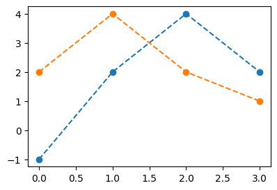
B. 고마움2
- 이건 원래 되는 기능
x = torch.tensor([2,3,4,5])
y = torch.tensor([1,2,4,-2])
plt.plot(x,y,'--o')
- 그런데 아래도 가능함
X = torch.tensor([2,3,4,5]).reshape(4,1) # shape=[4,1]
y = torch.tensor([1,2,4,-2]) # shape=[4]
plt.plot(X,y,'--o') # 사실 차원이 안맞았는데.. 잘 그려줌..
x = torch.tensor([2,3,4,5]) # shape=[4]
Y = torch.tensor([1,2,4,-2]).reshape(4,1) # shape=[4,1]
plt.plot(x,Y,'--o') # 사실 차원이 안맞았는데.. 잘 그려줌..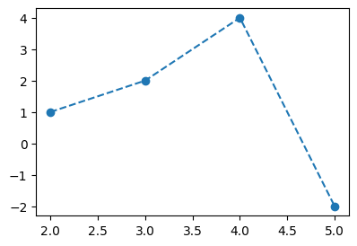
X = torch.tensor([2,3,4,5]).reshape(4,1) # shape=[4,1]
Y = torch.tensor([1,2,4,-2]).reshape(4,1) # shape=[4,1]
plt.plot(X,Y,'--o')
4. 로지스틱의 한계
A. 스펙의 역설
중소·지방 기업 “뽑아봤자 그만두니까”
중소기업 관계자들은 고스펙 지원자를 꺼리는 이유로 높은 퇴직률을 꼽는다. 여건이 좋은 대기업으로 이직하거나 회사를 관두는 경우가 많다는 하소연이다. 고용정보원이 지난 3일 공개한 자료에 따르면 중소기업 청년취업자 가운데 49.5%가 2년 내에 회사를 그만두는 것으로 나타났다.
중소 IT업체 관계자는 “기업 입장에서 가장 뼈아픈 게 신입사원이 그만둬서 새로 뽑는 일”이라며 “명문대 나온 스펙 좋은 지원자를 뽑아놔도 1년을 채우지 않고 그만두는 사원이 대부분이라 우리도 눈을 낮춰 사람을 뽑는다”고 말했다.
- 위의 기사를 모티브로 한 데이터
df = pd.read_csv("https://raw.githubusercontent.com/guebin/DL2026/refs/heads/master/posts/irony_of_spec.csv")
df| x | prob | y | |
|---|---|---|---|
| 0 | -1.000000 | 0.000045 | 0.0 |
| 1 | -0.998999 | 0.000046 | 0.0 |
| 2 | -0.997999 | 0.000047 | 0.0 |
| 3 | -0.996998 | 0.000047 | 0.0 |
| 4 | -0.995998 | 0.000048 | 0.0 |
| ... | ... | ... | ... |
| 1995 | 0.995998 | 0.505002 | 0.0 |
| 1996 | 0.996998 | 0.503752 | 0.0 |
| 1997 | 0.997999 | 0.502501 | 0.0 |
| 1998 | 0.998999 | 0.501251 | 1.0 |
| 1999 | 1.000000 | 0.500000 | 1.0 |
2000 rows × 3 columns
x = torch.tensor(df.x).float()
y = torch.tensor(df.y).float()
prob = torch.tensor(df.prob).float()B. 박혜원씨의 관찰
plt.plot(x,y,'o',alpha=0.02)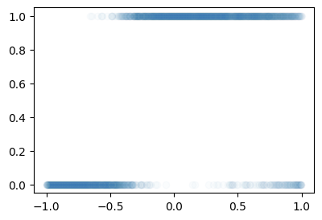
C. True (박혜원씨는 이걸 모름)
plt.plot(x,y,'o',alpha=0.02)
plt.plot(x,prob,'--r')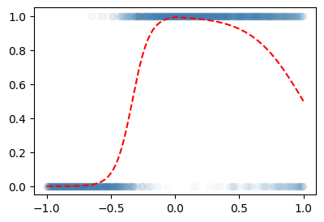
D. 다시 박혜원씨의 세상으로
X = x.reshape(-1,1)
Y = y.reshape(-1,1)
net = torch.nn.Sequential(
torch.nn.Linear(1,1),
torch.nn.Sigmoid()
)
loss_fn = torch.nn.BCELoss()
optimizer = torch.optim.Adam(net.parameters()) # 국민옵티마이저 Adam사용
#---#
for epoch in range(5000):
## Step1. Yhat만들기
Yhat = net(X)
## Step2. loss계산
loss = loss_fn(Yhat,Y)
## Step3. 미분
loss.backward()
## Step4. 업데이트
optimizer.step()
optimizer.zero_grad()plt.plot(X,Y,'o',alpha=0.02)
plt.plot(X,prob,'--r')
plt.plot(X,net(X).data,'--')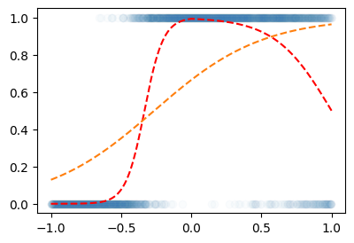
- 망했음..
E. 범인찾기
- 뭐가 문제인지 아래의 코드에서 살펴보자.
for epoch in range(5000):
## Step1. Yhat만들기
Yhat = net(X)
## Step2. loss계산
loss = loss_fn(Yhat,Y)
## Step3. 미분
loss.backward()
## Step4. 업데이트
optimizer.step()
optimizer.zero_grad()- Step1에서 Yhat을 만드는 과정자체가 문제임
- 그럼 어쩌라고?? sigmoid에 넣기 전의 상태가 직선이 아니라 꺽이는 직선이어야 한다.
a = torch.nn.Sigmoid()
u1 = torch.tensor([-6,-4,-2,0,2,4,6])
u2 = torch.tensor([6,4,2,0,-2,-4,-6])
u3 = torch.tensor([-6,-2,2,6,2,-2,-6])
u4 = torch.tensor([-6,-2,2,6,4,2,0])
#---#
fig,ax = plt.subplots(4,2,figsize=(8,8))
ax[0,0].plot(u1,'--o',label=r"$u_1$"); ax[0,0].legend()
ax[0,1].plot(a(u1),'--o',color="C1",label=r"$a(u_1)$"); ax[0,1].legend()
ax[1,0].plot(u2,'--o',label=r"$u_2$"); ax[1,0].legend()
ax[1,1].plot(a(u2),'--o',color="C1",label=r"$a(u_2)$"); ax[1,1].legend()
ax[2,0].plot(u3,'--o',label=r"$u_3$"); ax[2,0].legend()
ax[2,1].plot(a(u3),'--o',color="C1",label=r"$a(u_3)$"); ax[2,1].legend()
ax[3,0].plot(u4,'--o',label=r"$u_4$"); ax[3,0].legend()
ax[3,1].plot(a(u4),'--o',color="C1",label=r"$a(u_4)$"); ax[3,1].legend()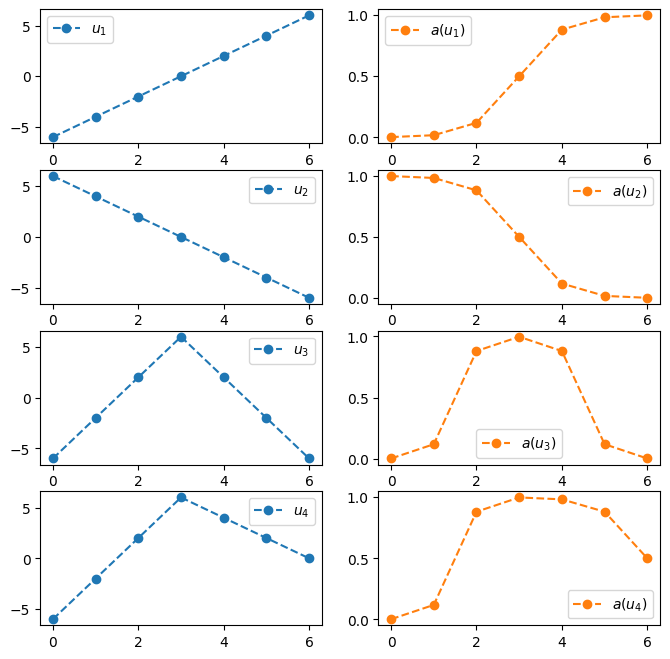
- 결국 아래의 네트워크 설계는 틀렸다.
net = torch.nn.Sequential(
torch.nn.Linear(1,1),
torch.nn.Sigmoid()
)- 왜?? 위의 네트워크가 표현할 수 있는 형태는 결국
- 증가하는 S모양의 곡선
- 감소하는 S모양의 곡선
뿐인데 실제 데이터는 1,2에 해당하지 않고 증가하다가 감소하는 형태의 곡선이기 때문. 즉 net가 표현하는 표현력이 너무 약하다.
5. 꺽인직선을 만드는 방법
- 스펙의역설 데이터를 적합시키기 위해서는 시그모이드를 취하기 전의 직선이 꺽인직선이어야함.
- 이번절에서는 꺽인직선을 만드는 방법들을 생각해보자.
- 아래와 같은 벡터 \({\bf x}\)를 고려하자.
x = torch.linspace(-1,1,1001)
xtensor([-1.0000, -0.9980, -0.9960, ..., 0.9960, 0.9980, 1.0000])- 목표: 아래와 같은 벡터 \({\bf y}\)를 만들어 보자.
\[{\bf y} = [y_1,y_2,\dots,y_n], \quad y_i = \begin{cases} 9x_i +4.5 & x_i \leq 0 \\ -4.5x_i + 4.5 & x_i > 0 \end{cases}\]
# 방법1 – 그냥 수식 그대로 구현
y = x*0
for i in range(1001):
if x[i] < 0:
y[i] = 9*x[i] + 4.5
else:
y[i] = -4.5*x[i] + 4.5plt.plot(x,y)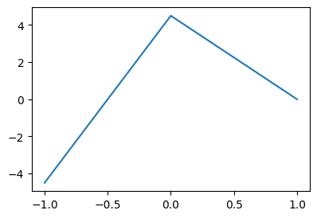
#
# 방법2 – 렐루이용
relu = torch.nn.ReLU()y = -9*relu(-x)-4.5*relu(x)+4.5
plt.plot(x,y)
- 좀 더 중간과정을 시각화해보자.
fig = plt.figure(figsize=(6,4))
spec = fig.add_gridspec(4,3)
ax1 = fig.add_subplot(spec[:2,0]); ax1.set_title(r"$f(x)=x$",fontsize=10)
ax2 = fig.add_subplot(spec[2:,0]); ax2.set_title(r"$f(x)=-x$",fontsize=10)
ax3 = fig.add_subplot(spec[:2,1]); ax3.set_title(r"$f(x)=relu(x)$",fontsize=10); ax3.set_ylim(-1,1)
ax4 = fig.add_subplot(spec[2:,1]); ax4.set_title(r"$f(x)=relu(-x)$",fontsize=10); ax4.set_ylim(-1,1)
ax5 = fig.add_subplot(spec[1:3,2]); ax5.set_title(r"$f(x)=-4.5relu(x)-9relu(-x)+4.5$",fontsize=10)
ax1.plot(x,x,'--',color="C0")
ax2.plot(x,-x,'--',color="C1")
ax3.plot(x,relu(x),'--',color="C0")
ax4.plot(x,relu(-x),'--',color="C1")
ax5.plot(x,-9*relu(-x)-4.5*relu(x)+4.5,'--',color="C2")
fig.tight_layout()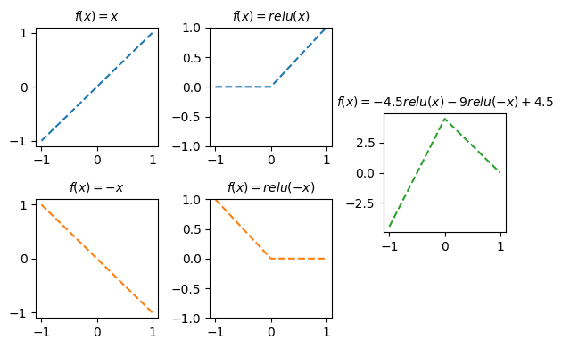
# 방법3 – relu + matrix 이용
- 위의 코드는 아래와 같이 쓸 수 있다.
U = torch.stack([x,-x],axis=1)
V = relu(U)
Y = -4.5*V[:,[0]] -9.0*V[:,[1]] + 4.5
plt.plot(Y)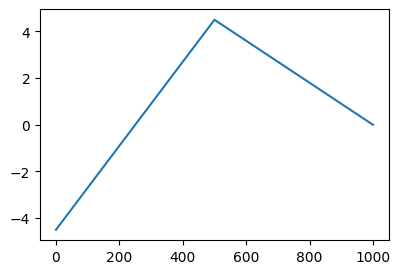
- 그런데.. 위의 코드는 다시 아래와 같이 쓸 수 있다.
X = x.reshape(-1,1)
U = X @ torch.tensor([[1.0, -1.0]])
V = relu(U)
Y = V @ torch.tensor([[-4.5],[-9.0]]) + 4.5
plt.plot(Y)
#
# 방법4 – 파이토치문법이용
- 아래의 내용을 다시 잘 떠올려보자.
net = torch.nn.Linear(??,??,bias=False)이렇게 선언하면 net(X) 는 X @ net.weight.data.T 와 같은 효과를 가진다.
net = torch.nn.Linear(??,??,bias=True)이렇게 선언하면 net(X) 는 X @ net.weight.data.T + net.bias.data 와 같은 효과를 가진다.
- 방법3에서 썼던 코드는 아래와 같다.
X = x.reshape(-1,1)
U = X @ torch.tensor([[1.0, -1.0]])
V = relu(U)
Y = V @ torch.tensor([[-4.5],[-9.0]]) + 4.5
plt.plot(Y)
X = x.reshape(-1,1)
#---#
l1 = torch.nn.Linear(1,2,bias=False)
l1.weight.data = torch.tensor([[1.0,-1.0]]).T
U = l1(X)
#---#
relu = torch.nn.ReLU()
V = relu(U)
#---#
l2 = torch.nn.Linear(2,1,bias=True)
l2.weight.data = torch.tensor([[-4.5],[-9.0]]).T
l2.bias.data = torch.tensor([4.5])
Y = l2(V)
#---#
plt.plot(X,Y.data)
- 사실 더 깔끔하게는 아래와 같이 쓸 수 있다.
f = torch.nn.Sequential(
torch.nn.Linear(1,2,bias=False),
torch.nn.ReLU(),
torch.nn.Linear(2,1,bias=True)
)
f[0].weight.data = torch.tensor([[1.0,-1.0]]).T
f[2].weight.data = torch.tensor([[-4.5],[-9.0]]).T
f[2].bias.data = torch.tensor([4.5])
f(X)tensor([[-4.5000],
[-4.4820],
[-4.4640],
...,
[ 0.0180],
[ 0.0090],
[ 0.0000]], grad_fn=<AddmmBackward0>)#
6. 스펙의 역설 데이터 적합
- 스펙의역설을 다시 적합해보자.
df = pd.read_csv("https://raw.githubusercontent.com/guebin/DL2026/refs/heads/master/posts/irony_of_spec.csv")
x = torch.tensor(df.x).float()
y = torch.tensor(df.y).float()
prob = torch.tensor(df.prob).float()- 실패했던풀이
X = x.reshape(-1,1)
Y = y.reshape(-1,1)
net = torch.nn.Sequential(
torch.nn.Linear(1,1),
torch.nn.Sigmoid()
)
loss_fn = torch.nn.BCELoss()
optimizer = torch.optim.Adam(net.parameters()) # 국민옵티마이저 Adam사용
#---#
for epoch in range(5000):
## Step1. Yhat만들기
Yhat = net(X)
## Step2. loss계산
loss = loss_fn(Yhat,Y)
## Step3. 미분
loss.backward()
## Step4. 업데이트
optimizer.step()
optimizer.zero_grad()plt.plot(X,Y,'o',alpha=0.03)
plt.plot(X,net(X).data)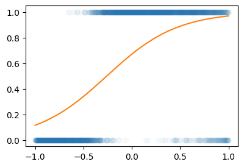
- 개선된 풀이: 시그모이드를 취하기 전의 형태가 그냥 직선이 아니라 꺽인 직선의 형태
X = x.reshape(-1,1)
Y = y.reshape(-1,1)
net = torch.nn.Sequential(
torch.nn.Linear(1,2,bias=True),
torch.nn.ReLU(),
torch.nn.Linear(2,1,bias=True),
torch.nn.Sigmoid()
)
loss_fn = torch.nn.BCELoss()
optimizer = torch.optim.Adam(net.parameters()) # 국민옵티마이저 Adam사용
#---#
for epoch in range(5000):
## Step1. Yhat만들기
Yhat = net(X)
## Step2. loss계산
loss = loss_fn(Yhat,Y)
## Step3. 미분
loss.backward()
## Step4. 업데이트
optimizer.step()
optimizer.zero_grad()plt.plot(X,Y,'o',alpha=0.03)
plt.plot(X,prob,'--r')
plt.plot(X,net(X).data)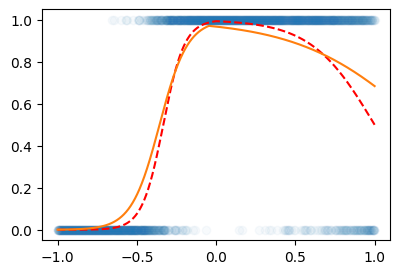
좀 아쉽네? 한번더!!
for epoch in range(5000):
## Step1. Yhat만들기
Yhat = net(X)
## Step2. loss계산
loss = loss_fn(Yhat,Y)
## Step3. 미분
loss.backward()
## Step4. 업데이트
optimizer.step()
optimizer.zero_grad()plt.plot(X,Y,'o',alpha=0.03)
plt.plot(X,prob,'--r')
plt.plot(X,net(X).data)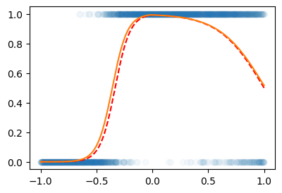
- 저번시간에 로직스틱에서 적합한 것도 위의 네트워크로 적합가능 (이 네트워크는 무조건 꺽이는 선만 표현하는건 아님)
!wget https://raw.githubusercontent.com/guebin/DL2026/master/posts/05wk-employed.pt
!wget https://raw.githubusercontent.com/guebin/DL2026/master/posts/05wk-spec.pt
spec = torch.load("05wk-spec.pt")
employed = torch.load("05wk-employed.pt")--2026-04-12 15:21:47-- https://raw.githubusercontent.com/guebin/DL2026/master/posts/05wk-employed.pt
Resolving raw.githubusercontent.com (raw.githubusercontent.com)... 185.199.110.133, 185.199.111.133, 185.199.108.133, ...
Connecting to raw.githubusercontent.com (raw.githubusercontent.com)|185.199.110.133|:443... connected.
HTTP request sent, awaiting response... 200 OK
Length: 9619 (9.4K) [application/octet-stream]
Saving to: ‘05wk-employed.pt’
05wk-employed.pt 100%[===================>] 9.39K --.-KB/s in 0s
2026-04-12 15:21:48 (71.9 MB/s) - ‘05wk-employed.pt’ saved [9619/9619]
--2026-04-12 15:21:48-- https://raw.githubusercontent.com/guebin/DL2026/master/posts/05wk-spec.pt
Resolving raw.githubusercontent.com (raw.githubusercontent.com)... 185.199.109.133, 185.199.110.133, 185.199.111.133, ...
Connecting to raw.githubusercontent.com (raw.githubusercontent.com)|185.199.109.133|:443... connected.
HTTP request sent, awaiting response... 200 OK
Length: 9591 (9.4K) [application/octet-stream]
Saving to: ‘05wk-spec.pt’
05wk-spec.pt 100%[===================>] 9.37K --.-KB/s in 0s
2026-04-12 15:21:48 (87.1 MB/s) - ‘05wk-spec.pt’ saved [9591/9591]
X = spec.reshape(-1,1)
Y = employed.reshape(-1,1)
net = torch.nn.Sequential(
torch.nn.Linear(1,2,bias=True),
torch.nn.ReLU(),
torch.nn.Linear(2,1,bias=True),
torch.nn.Sigmoid()
)
loss_fn = torch.nn.BCELoss()
optimizer = torch.optim.Adam(net.parameters()) # 국민옵티마이저 Adam사용
#---#
for epoch in range(5000):
## Step1. Yhat만들기
Yhat = net(X)
## Step2. loss계산
loss = loss_fn(Yhat,Y)
## Step3. 미분
loss.backward()
## Step4. 업데이트
optimizer.step()
optimizer.zero_grad()plt.plot(X,Y,'o',alpha=0.03)
plt.plot(X,net(X).data)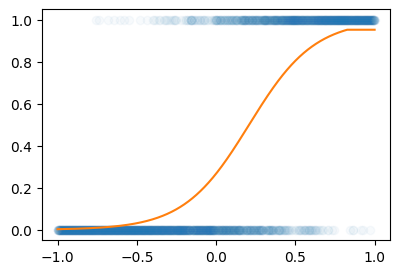
한번 더 돌려볼까?
for epoch in range(5000):
## Step1. Yhat만들기
Yhat = net(X)
## Step2. loss계산
loss = loss_fn(Yhat,Y)
## Step3. 미분
loss.backward()
## Step4. 업데이트
optimizer.step()
optimizer.zero_grad()plt.plot(X,Y,'o',alpha=0.03)
plt.plot(X,net(X).data)
#---#
#궁금해서 true랑 비교
w0ast = -1
w1ast = 5
def sig(x):
return torch.exp(x)/(torch.exp(x)+1)
piast = sig(w0ast+w1ast*x)
plt.plot(X,piast,'--r')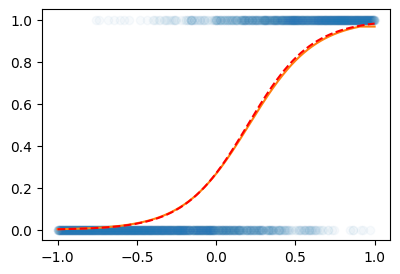
- 방금한 코드의 비판: 이 net
net = torch.nn.Sequential(
torch.nn.Linear(1,2,bias=True),
torch.nn.ReLU(),
torch.nn.Linear(2,1,bias=True),
torch.nn.Sigmoid()
)은 저번시간에 배운 아래의 네트워크보다 학습할 파라메터가 3배 더 많음.
net = torch.nn.Sequential(
torch.nn.Linear(1,1),
torch.nn.Sigmoid()
)- 하지만 표현력은 더 좋죠? 꺽을수도있고, 안 꺽을수도 있고
- 실무적으로 적합하는게 걸리는 시간도 별로 차이안남
7. 많이 꺽인그래프는 생각보다 좋음
# 예제1 – 일부러 이상하게 만든 취업합격률 곡선
torch.manual_seed(43052)
x = torch.linspace(-1,1,2000)
u = 0*x-3
u[x<-0.2] = (15*x+6)[x<-0.2]
u[(-0.2<x)&(x<0.4)] = (0*x-1)[(-0.2<x)&(x<0.4)]
sig = torch.nn.Sigmoid()
v = sig(u)
y = torch.bernoulli(v)plt.plot(x,y,'.',alpha=0.03)
plt.plot(x,v,'--r')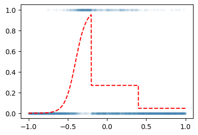
X = x.reshape(-1,1)
Y = y.reshape(-1,1)
net = torch.nn.Sequential(
torch.nn.Linear(1,512),
torch.nn.ReLU(),
torch.nn.Linear(512,1),
torch.nn.Sigmoid()
)
loss_fn = torch.nn.BCELoss()
optimizer = torch.optim.Adam(net.parameters())
for epoch in range(3000):
# step1
Yhat = net(X)
# step2
loss = loss_fn(Yhat,Y)
# step3
loss.backward()
# step4
optimizer.step()
optimizer.zero_grad()plt.plot(X,Y,'.',alpha=0.03)
plt.plot(X,v,'--r') # true: 박혜원씨는 모름
plt.plot(X,net(X).data)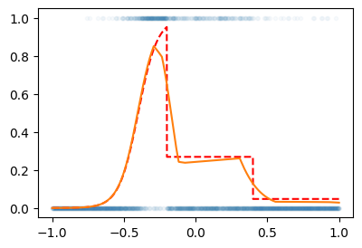
- 딱 맞추진 못해서 상당히 그럴듯하게 맞춤..
더 적합시켜보면
for epoch in range(3000):
# step1
Yhat = net(X)
# step2
loss = loss_fn(Yhat,Y)
# step3
loss.backward()
# step4
optimizer.step()
optimizer.zero_grad()plt.plot(X,Y,'.',alpha=0.03)
plt.plot(X,v,'--r') # true: 박혜원씨는 모름
plt.plot(X,net(X).data)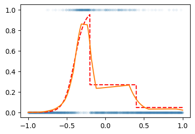
# 예제2 – 2024년 수능 미적30번 문제에 나온 곡선
\[y_i = e^{-x_i} \times |\cos(5x_i)| \times \sin(5x) + \epsilon_i, \quad \epsilon_i \sim N(0,\sigma^2)\]
torch.manual_seed(43052)
x = torch.linspace(0,2,2000)
noise = torch.randn(2000)*0.05
structure = torch.exp(-1*x)* torch.abs(torch.cos(3*x))*(torch.sin(3*x))
y = structure + noiseplt.plot(x,y)
plt.plot(x,structure,'--r') # 트루, 박혜원씨는 모름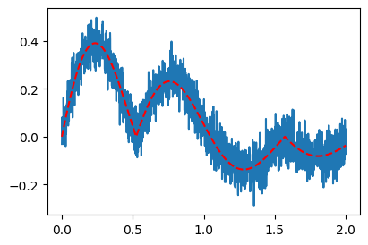
X = x.reshape(-1,1)
Y = y.reshape(-1,1)
net = torch.nn.Sequential(
torch.nn.Linear(1,512),
torch.nn.ReLU(),
torch.nn.Linear(512,1),
)
loss_fn = torch.nn.MSELoss()
optimizer = torch.optim.Adam(net.parameters())
for epoch in range(3000):
# step1
Yhat = net(X)
# step2
loss = loss_fn(Yhat,Y)
# step3
loss.backward()
# step4
optimizer.step()
optimizer.zero_grad()plt.plot(x,y)
plt.plot(x,structure,'--r') # 트루, 박혜원씨는 모름
plt.plot(X,net(X).data,'--') # 되게 그럴싸함.. 생각보다 잘맞춤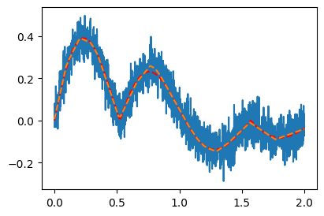